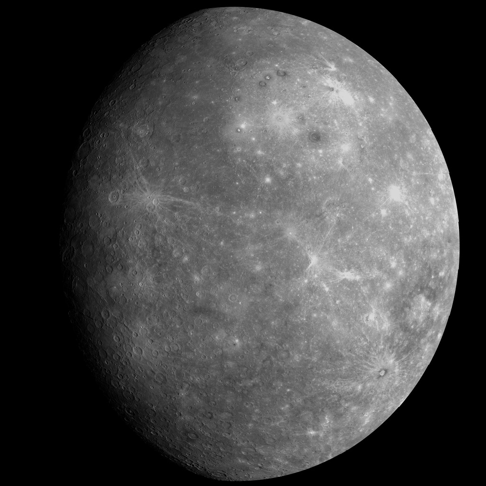
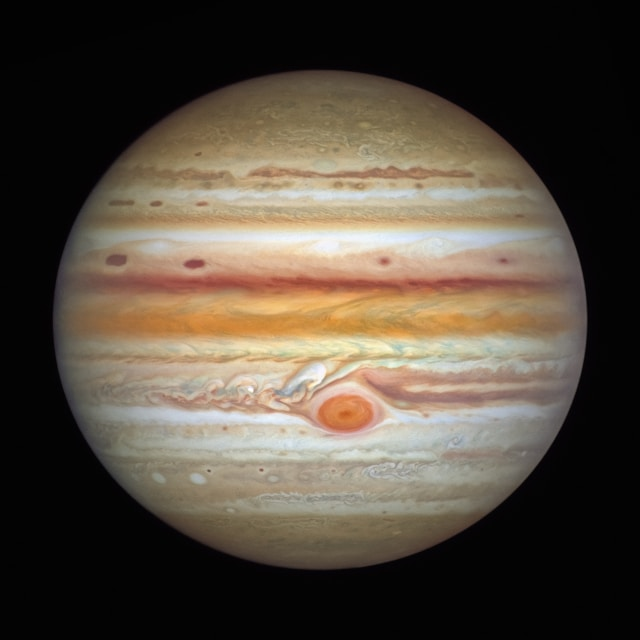
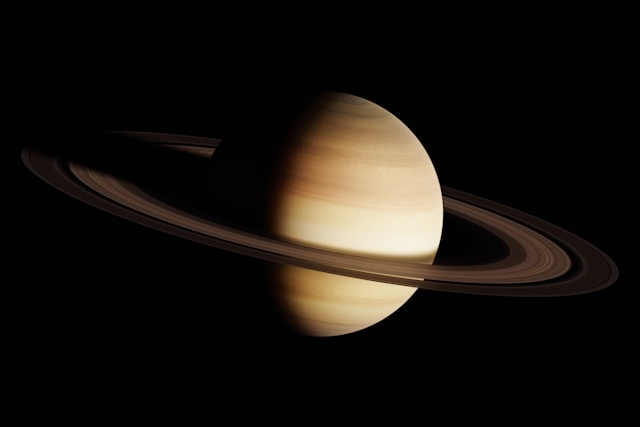
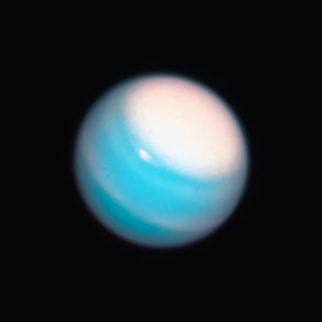
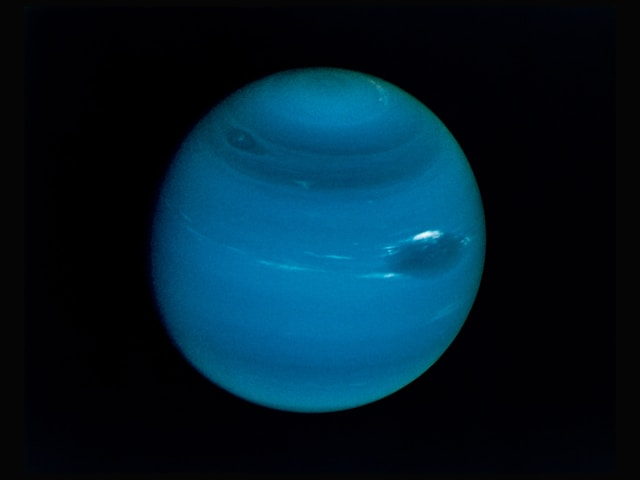

Планеты ниже
Солнце
Солнце (астр. ☉) — единственная звезда Солнечной системы. Вокруг Солнца обращаются другие объекты этой системы: планеты и их спутники, карликовые планеты и их спутники, астероиды, метеороиды, кометы и космическая пыль

Земля
Земля — третья по удалённости от Солнца планета Солнечной системы, крупнейшая из планет земной группы, в которую входят также Меркурий, Венера и Марс. Это единственная планета, на которой, согласно современным научным представлениям, есть жизнь.

Марс
Марс — четвёртая по удалённости от Солнца и седьмая по размеру планета Солнечной системы. Названа в честь Марса — древнеримского бога войны. Иногда Марс называют «красной планетой» из-за красноватого оттенка поверхности, придаваемого ей минералом маггемитом — γ-оксидом железа(III).

Венера
Венера — вторая по удалённости от Солнца и шестая по размеру планета Солнечной системы, наряду с Меркурием, Землёй и Марсом принадлежащая к семейству планет земной группы. Названа в честь древнеримской богини любви Венеры.

Меркурий
Меркурий — самая маленькая и самая близкая к Солнцу планета. Расстояние от Солнца — около 58 миллионов километров. Днём температура поднимается до +430°C, а ночью опускается до -180°C — это самые резкие перепады в Солнечной системе. Атмосфера почти отсутствует, поверхность покрыта кратерами, напоминает Луну. Год на Меркурии длится 88 земных дней, а один день — 59 земных дней. Из-за необычной орбиты Солнце там могло бы встать, остановиться, а потом пойти обратно.

Юпитер
Юпитер — самая большая планета Солнечной системы. Его масса в 2,5 раза больше, чем у всех остальных планет вместе взятых. Диаметр — около 140 тысяч километров, что в 11 раз больше земного. Юпитер — газовый гигант, у него нет твёрдой поверхности. Состоит в основном из водорода и гелия. На планце бушуют мощные штормы, самый известный — Большое красное пятно, которое наблюдают уже более 300 лет. Юпитер окружён слабой системой колец и имеет 95 известных спутников, четыре крупнейших (Ио, Европа, Ганимед, Каллисто) открыл ещё Галилео Галилей. Год на Юпитере длится 12 земных лет, а сутки — всего 10 часов.

Сатурн
Сатурн — шестая планета от Солнца, известная своей яркой системой колец. Это газовый гигант, вторая по величине планета после Юпитера. Диаметр — около 116 тысяч километров. Состоит в основном из водорода и гелия. Кольца Сатурна — это миллиарды частиц льда и пыли, их толщина всего около 1 километра, а ширина достигает 280 тысяч километров. У планеты более 140 известных спутников, крупнейший — Титан, который больше планеты Меркурий и имеет плотную атмосферу. Год на Сатурне длится 29,5 земных лет, сутки — около 10,5 часов.

Уран
Уран — седьмая планета от Солнца, первый газовый гигант, открытый в Новое время (в 1781 году Уильямом Гершелем). Отличается тем, что вращается «на боку» — ось наклонена почти на 98 градусов, поэтому смена сезонов происходит не так, как на других планетах. Диаметр — около 51 тысячи километров, что в 4 раза больше Земли. Атмосфера состоит из водорода, гелия и метана, который придаёт планете голубовато-зелёный цвет. У Урана есть слабые кольца и 27 известных спутников. Год длится 84 земных года, сутки — около 17 часов.

Нептун
Нептун — восьмая и самая дальняя планета Солнечной системы. Открыт в 1846 году благодаря математическим расчётам, а не наблюдениям — его существование предсказали до того, как увидели в телескоп. Диаметр — около 49,5 тысяч километров, что почти в 4 раза больше Земли. Как и Уран, Нептун — ледяной гигант. Атмосфера состоит из водорода, гелия и метана, который придаёт планете ярко-синий цвет. На Нептуне бушуют самые сильные ветры в Солнечной системе — скорость достигает 2100 км/ч. У планеты есть слабые кольца и 16 известных спутников, крупнейший — Тритон. Год на Нептуне длится 165 земных лет, сутки — около 16 часов.
